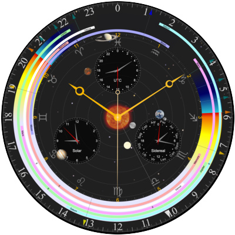

Chronometer for the Web
A web port of Emerald Chronometer (GitHub), an astronomical watch-face app originally built for iPhone and iPad.
View the project on GitHub · Credits · Privacy · Support · Disclaimer
Your settings are saved in this browser's local storage on this device. Use the Share button to copy a link to a view. See Privacy for more information.
Other Apps

A web port of Emerald Chronometer (GitHub), an astronomical watch-face app originally built for iPhone and iPad.
A web port of Emerald Observatory (GitHub), an astronomical clock app originally built for iPad.
General Help Topics
Privacy
Emerald Chronometer for the Web
Overview
Emerald Chronometer for the Web is a fully client-side application. It runs entirely in your browser and does not communicate with any application server for its core functionality.
Data Collection
The app itself does not collect, store, or transmit any personal data to any application server. There are no app-level analytics, tracking pixels, cookies, or telemetry of any kind.
Web Server Logs
When the app is served over HTTP or HTTPS, the hosting provider (SiteGround) records standard web server access logs for each page and resource request. These logs include:
- Your IP address
- The URL requested. The app normally keeps the URL clean; query-string parameters (latitude, longitude, city name, timezone, etc.) appear only when you create or open a shared link
- Timestamp, HTTP status code, referrer, and browser user-agent string
These logs are retained by SiteGround for up to 30 days and are used solely for security monitoring and troubleshooting. They are not analyzed for user tracking purposes.
When running from file:// URLs (a local copy of the app), no
server is involved and no logs are generated.
Map Tile Requests
When you use the location dialog (on pages served via http:// or
https://), the app fetches map tile images from
OpenStreetMap
to display a preview of the selected location.
These requests are standard image fetches and do not include any metadata identifying the tile coordinates as your location — OpenStreetMap sees only which map tile was requested, the same as any map browsing.
Browser Location (Geolocation API)
If you tap "Use device location via browser", the app uses the browser's Geolocation API to obtain your coordinates. This data is processed entirely within the browser — the app never sends it to any application server.
The resolved coordinates are matched against a bundled database of approximately 47,000 cities to display a human-readable location name. This reverse-geolocation lookup happens entirely in the browser — no external geocoding service is contacted.
Local Storage & Sharing
The app saves your settings (location, time, and per-app configuration) in your browser's local storage — on your device only. This data is never sent to any application server, and it persists across visits without any cookies.
You can clear local storage at any time through your browser's settings (typically alongside your browsing history).
When you use the Share button, the app builds a URL that encodes the current view so you can send it to someone else or open it on another device. Opening such a link lets you either use those settings just for that visit or save them as your defaults.
Note: Because shared links carry settings as URL query
parameters, those parameters are visible in your browser history and, when
served over HTTP or HTTPS, in the hosting provider's access logs — but only for
links you deliberately create or open. On file:// pages where
local storage is unavailable, the app falls back to keeping settings in the
URL.
Third-Party Services
- OpenStreetMap (map tiles only, HTTP/HTTPS only) — governed by OSM's privacy policy.
Contact
For questions about this privacy policy, please visit the project on GitHub.
Last updated: May 2026
Support
Emerald Chronometer for the Web
This free web app is served by a site run by volunteers and provides no support. All the website does is serve, as a convenience, files available from the GitHub releases page (see instructions for running the app here).
You are encouraged to report issues to the developers at the GitHub issues page here, but as the developers are also volunteers you may not get a response in a timely fashion.
Disclaimer
Emerald Chronometer for the Web
THIS FREE WEB APP IS PROVIDED “AS IS”, WITHOUT WARRANTY OF ANY KIND, EXPRESS OR IMPLIED, INCLUDING BUT NOT LIMITED TO THE WARRANTIES OF MERCHANTABILITY, FITNESS FOR A PARTICULAR PURPOSE AND NONINFRINGEMENT. IN NO EVENT SHALL THE AUTHORS OR COPYRIGHT HOLDERS BE LIABLE FOR ANY CLAIM, DAMAGES OR OTHER LIABILITY, WHETHER IN AN ACTION OF CONTRACT, TORT OR OTHERWISE, ARISING FROM, OUT OF OR IN CONNECTION WITH THE SOFTWARE OR THE USE OR OTHER DEALINGS IN THE SOFTWARE.
The pages served to your browser are available at the GitHub releases page (see instructions for running the app here).
Milano has a secular perpetual calendar with four retrograde complications, which are hands that snap back to their starting positions without going all the way around.
The cyan hand shows the current month.
The yellow hand shows the date.
The green hand shows the day of the week.
The magenta hand indicates the fraction of the remaining power reserve (battery level on your device). This hand and its dial are automatically hidden if your browser or device does not support the Battery Status API. (Note that some browsers support the API but hardcode the value to 1.0; this app has no way of detecting this situation.)